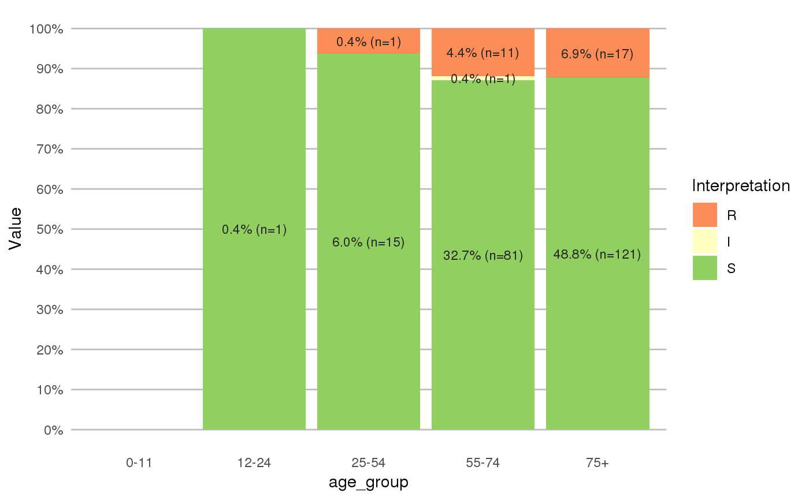

age_groups.RdSplit ages into age groups defined by the split parameter. This allows for easier demographic (antimicrobial resistance) analysis.
age_groups(x, split_at = c(12, 25, 55, 75))
| x | age, e.g. calculated with |
|---|---|
| split_at | values to split |
Ordered factor
To split ages, the input can be:
A numeric vector. A vector of c(10, 20) will split on 0-9, 10-19 and 20+. A value of only 50 will split on 0-49 and 50+.
The default is to split on young children (0-11), youth (12-24), young adults (26-54), middle-aged adults (55-74) and elderly (75+).
A character:
"children", equivalent of: c(0, 1, 2, 4, 6, 13, 18). This will split on 0, 1, 2-3, 4-5, 6-12, 13-17 and 18+.
"elderly" or "seniors", equivalent of: c(65, 75, 85, 95). This will split on 0-64, 65-74, 75-84, 85-94 and 95+.
"fives", equivalent of: 1:20 * 5. This will split on 0-4, 5-9, 10-14, 15-19 and so forth.
"tens", equivalent of: 1:10 * 10. This will split on 0-9, 10-19, 20-29 and so forth.
age to determine ages based on one or more reference dates
#> [1] 0-49 0-49 0-49 50+ 0-49 50+ 50+ 0-49 0-49 #> Levels: 0-49 < 50+#> [1] 0-19 0-19 0-19 50+ 20-49 50+ 50+ 20-49 20-49 #> Levels: 0-19 < 20-49 < 50+# split into groups of ten years age_groups(ages, 1:10 * 10)#> [1] 0-9 0-9 10-19 50-59 30-39 70-79 100+ 40-49 20-29 #> 11 Levels: 0-9 < 10-19 < 20-29 < 30-39 < 40-49 < 50-59 < 60-69 < ... < 100+age_groups(ages, split_at = "tens")#> [1] 0-9 0-9 10-19 50-59 30-39 70-79 100+ 40-49 20-29 #> 11 Levels: 0-9 < 10-19 < 20-29 < 30-39 < 40-49 < 50-59 < 60-69 < ... < 100+# split into groups of five years age_groups(ages, 1:20 * 5)#> [1] 0-4 5-9 15-19 50-54 30-34 75-79 100+ 40-44 20-24 #> 21 Levels: 0-4 < 5-9 < 10-14 < 15-19 < 20-24 < 25-29 < 30-34 < ... < 100+age_groups(ages, split_at = "fives")#> [1] 0-4 5-9 15-19 50-54 30-34 75-79 100+ 40-44 20-24 #> 21 Levels: 0-4 < 5-9 < 10-14 < 15-19 < 20-24 < 25-29 < 30-34 < ... < 100+# split specifically for children age_groups(ages, "children")#> [1] 2-3 6-12 13-17 18+ 18+ 18+ 18+ 18+ 18+ #> Levels: 0 < 1 < 2-3 < 4-5 < 6-12 < 13-17 < 18+#> [1] 2-3 6-12 13-16 17+ 17+ 17+ 17+ 17+ 17+ #> Levels: 0 < 1 < 2-3 < 4-5 < 6-12 < 13-16 < 17+#> #>#> #> #>#> #> #>#> #> #>septic_patients %>% mutate(first_isolate = first_isolate(.)) %>% filter(first_isolate == TRUE, mo == as.mo("E. coli")) %>% group_by(age_group = age_groups(age)) %>% select(age_group, cipr) %>% ggplot_rsi(x = "age_group")#>#> NOTE: Using column `date` as input for `col_date`.#> NOTE: Using column `patient_id` as input for `col_patient_id`.#> 1,315 first isolates (65.8% of total)#> Warning: Removed 3 rows containing missing values (geom_bar).#> Warning: Removed 3 rows containing missing values (geom_text).